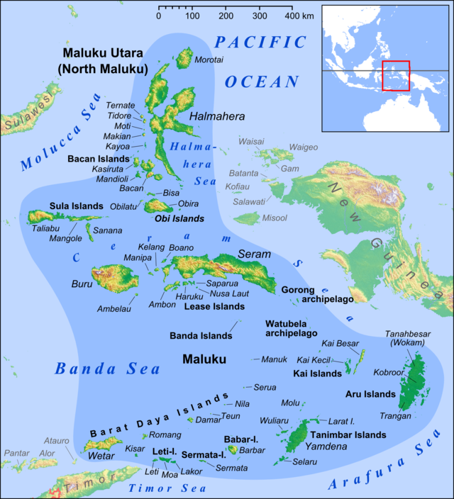

返回主页
四王群岛(Raja Ampat)详图

印度尼西亚的Sorong（四王岛）
传说中的香料群岛：亚洲印度尼西亚的马鲁古群岛、班达群岛
1511年，葡萄牙人控制了沟通太平洋与印度洋的马六甲海峡，随后在班达群岛建立了香料贸易基地。1512年，葡萄牙人霸占马鲁古群岛（Maluku）。之后，西班牙人和荷兰人接踵而来。经过激烈争夺，到17世纪时，马鲁古（Maluku）群岛落入荷兰东印度公司的手里。
"Spice Islands" most commonly refers to the Maluku Islands and often also to the small volcanic Banda Islands, once the only source of mace 肉豆蔻 and nutmeg 肉豆蔻.
version:1.0; jobnet@188.com © retter2012.com